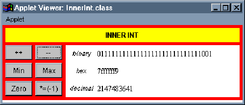
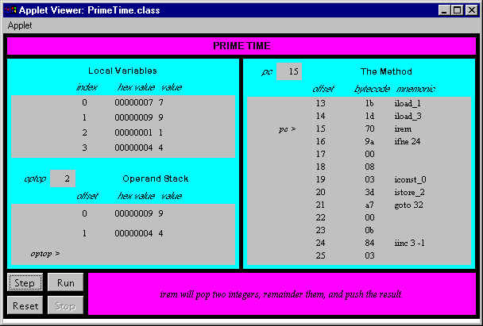

This chapter describes integer arithmetic in the Java Virtual Machine. It explains two's complement arithmetic (the mechanism used by the Java Virtual Machine to perform integer arithmetic) and describes the instructions that perform integer arithmetic.
Accompanying this chapter on the CD-ROM are two applets that interactively illustrate the material presented in the chapter. One applet, named Inner Int, allows you to view and manipulate the individual components that make up a two's complement number. The other applet, named Prime Time, simulates the Java Virtual Machine executing a method that generates prime numbers. At the end of this chapter, you will find a description of this applet and the bytecodes it executes.
Two's Complement Arithmetic
All integer types supported by the Java Virtual Machine-- byte s, short s, int s, and long s--are signed two's-complement numbers. The two's-complement scheme allows both positive and negative integers to be represented. The most significant bit of a two's-complement number is its sign bit. The sign bit is one for negative numbers and zero for positive numbers and for the number zero.
The number of unique values that can be represented by the two's-complement scheme is two raised to the power of the total number of bits. For example, the short type in Java is a 16-bit signed two's-complement integer. The number of unique integers that can be represented by this scheme is 2 16 , or 65,536. Half of the short type's range of values are used to represent zero and positive numbers; the other half of the short type's range are used to represent negative numbers. The range of negative values for a 16-bit two's-complement number is -32,768 (0x8000) to -1 (0xffff). Zero is 0x0000. The range of positive values is one (0x0001) to 32,767 (0x7fff).
Positive numbers are intuitive in that they are merely the base two representation of the number. Negative numbers can be calculated by adding the negative number to two raised to the power of the total number of bits. For example, the total number of bits in a short is 16, so the two's-complement representation of a negative number in the valid range for a short (-32,768 to -1) can be calculated by adding the negative number to 2 16 , or 65,536. The two's-complement representation for -1 is 65,536 + (-1) or 65,535 (0xffff). The two's-complement representation for -2 is 65,536 + (-2) or 65,534 (0xfffe).
Addition is performed on two's-complement signed numbers in the same way it would be performed on unsigned binary numbers. The two numbers are added, overflow is ignored, and the result is interpreted as a signed two's-complement number. This will work as long as the result is actually within the range of valid values for the type. For example, to add 4 + (-2), just add 0x00000004 and 0xfffffffe. The result is actually 0x100000002, but because there are only 32 bits in an int, the overflow is ignored and the result becomes 0x00000002.
Overflow in integer operations does not throw any exception in the Java Virtual Machine. The result is merely truncated to fit into the result type (either int or long ). For example, adding int s 0x7fffffff and 1 yields 0x80000000. This means that the Java Virtual Machine will report that 2,147,483,647 + 1 = -2,147,483,648, if the type of the values being added are int s and not long s. As you program in Java, you must keep in mind that overflow can happen and make sure you choose the appropriate type, int or long, in each situation. Integer division by zero does throw an ArithmeticException, so you should also keep in mind that this exception could be thrown and catch it if necessary.
If you encounter a situation in which long just isn't long enough, you can use the BigInteger class of the java.math package. Instances of this class are arbitrary-length integers. The BigInteger class supports all arithmetic operations on arbitrary-length integers that are provided for the primitive types by the Java Virtual Machine and the java.lang.Math package.
Inner Int: A Java int Reveals its Inner Nature
The Inner Int applet, shown in Figure 12-1, lets you play around with the two's-complement format of integers in the Java Virtual Machine. The Max and Min buttons will give you the maximum and minimum values of the int type. By clicking Max followed by ++ you can increment beyond the maximum integer and see what happens. Clicking Min followed by -- lets you decrement beyond the minimum integer. Both of these result in overflow, but no exceptions are thrown by the Java Virtual Machine. The applet is embedded in a web page on the CD-ROM in file applets/InnerInt.html.

Arithmetic Opcodes
The Java Virtual Machine offers several opcodes that perform integer arithmetic operations on int s and long s. As mentioned in earlier chapters, values of type byte, short, and char are converted to int before they take part in arithmetic operations. For each opcode that performs arithmetic on int s, there is a corresponding opcode that performs the same operation on long s.
Integer addition can be performed on int s and long s. Table 12-1 shows the opcodes that pop the top two values on the stack, add them, and push the resulting sum. The values to be added must have been pushed onto the stack by previous instructions. The type of the values is indicated by the opcode itself, and the result always has the same type as the numbers being added. No exceptions are thrown for any of these opcodes. Overflow is just ignored.
Table 12-1. Integer addition
| Opcode | Operand(s) | Description |
iadd | (none) | pops two int s, adds them, and pushes the int result |
ladd | (none) | pops two long s, adds them, and pushes the long result |
Table 12-2 shows the exception to the rule that arithmetic opcodes take their operands from the stack. The iinc opcode performs an addition on a local variable of type int. The local variable to increment is specified by the first byte that follows the iinc instruction in the bytecode stream. The amount to add to the local variable is taken from the second byte following the iinc instruction. The second byte is interpreted as an 8-bit signed two's-complement number. The local variable and 8-bit signed value are added, and the result is written back to the local variable. This opcode can be used to change a local variable value by any number between and including -128 through 127. This opcode makes for more efficient incrementing and decrementing of variables that are used to control execution of loops, such as for or while. As with the add instruction, no exceptions are thrown. Overflow is ignored.
The second row in Table 12-2 shows the wide variant of the iinc instruction. As mentioned in Chapter 10, "Stack and Local Variable Operations," the wide instruction is used to extend unsigned local variable indexes from eight bits to sixteen. Sixteen bits allows instructions to address up to 65,536 local variable slots. In the iinc case, the wide instruction also extends the size of the signed increment value from eight bits to sixteen. This means the wide variant of the iinc opcode can be used to change a local variable value by any number between and including -32,768 through 32,767.
Table 12-2. Increment a local variable by a constant
| Opcode | Operand(s) | Description |
iinc | vindex, const | adds const to an int at local variable position vindex |
wide | iinc, indexbyte1, indexbyte2, constbyte1, constbyte2 | adds const to an int at local variable position index end table |
Integer subtraction is performed on int s and long s via the opcodes shown in Table 12-3. Each opcode causes the top two values of the appropriate type to be popped off the stack. The topmost value is subtracted from the value just beneath it. The result is pushed back onto the stack. No exceptions are thrown by these opcodes.
Table 12-3. Integer subtraction
| Opcode | Operand(s) | Description |
isub | (none) | pops two int s, subtracts them, and pushes the int result |
lsub | (none) | pops two long s, subtracts them, and pushes the long result |
Integer multiplication of int s and long s is accomplished via the opcodes shown in Table 12-4. Each opcode causes two values of the same type to be popped off the stack and multiplied. The result, of the same type as the numbers being multiplied, is pushed back onto the stack. No exceptions are thrown.
Table 12-4. Integer multiplication
| Opcode | Operand(s) | Description |
imul | (none) | pops two int s, multiplies them, and pushes the int result |
lmul | (none) | pops two long s, multiplies them, and pushes the long result |
The opcodes that perform division on int s and long s are shown in Table 12-5. The division opcodes cause the top two values of the appropriate type to be popped off the stack. The value just beneath the topmost value is divided by the topmost value. (In other words, the first value pushed onto the stack is used as the dividend or numerator. The second value pushed--the top of the stack--is used as the divisor or denominator.) The result of the division is pushed back onto the stack. Integer division yields a result that is truncated down to the nearest integer value between it and zero. Integer division by zero throws an ArithmeticException.
Table 12-5. Integer division
| Opcode | Operand(s) | Description |
idiv | (none) | pops two int s, divides them, and pushes the int result |
ldiv | (none) | pops two long s, divides them, and pushes the long result |
The remainder operation is performed on int s and long s via the opcodes shown in Table 12-6. Theses opcodes cause the top two values to be popped from the stack. The value just beneath the topmost value is divided by the topmost value, and the remainder of that division is pushed back onto the stack. As with the division opcodes, integer remainder by zero throws an ArithmeticException.
Table 12-6. Integer remainder
| Opcode | Operand(s) | Description |
irem | (none) | pops two int s, divides them, and pushes the int remainder |
lrem | (none) | pops two long s, divides them, and pushes the long remainder |
The opcodes shown in Table 12-7 perform arithmetic negation on int s and long s. The negation opcodes pop the top value from the stack, negate it, and push the result.
Table 12-7. Integer negation
| Opcode | Operand(s) | Description |
ineg | (none) | pops an int, negates it, and pushes the result |
lneg | (none) | pops a long, negates it, and pushes the result |
Prime Time
: A Simulation The Prime Time applet, shown in Figure 12-2, demonstrates a Java Virtual Machine executing a sequence of bytecodes that generates prime numbers. The applet is embedded in a web page on the CD-ROM in fileapplets/PrimeTime.html. The bytecode sequence in the simulation was generated by the javac compiler for the findPrimes () method of the class shown below:
begin// On CD-ROM in file integer/ex1/PrimeFinder.java1;class PrimeFinder {
static void findPrimes() {
int primeNum = 1;
int numToCheck = 2;
for (;;) {
boolean foundPrime = true;
for (int divisor = numToCheck / 2; divisor
--divisor) {
if (numToCheck % divisor == 0) {
foundPrime = false;
break;
}
}
if (foundPrime) {
primeNum = numToCheck;
}
++numToCheck;
}
}
}
end
The findPrimes() method places prime numbers, one at a time and in increasing numerical order, into the primeNum variable. To find the primes, it checks each positive integer in increasing numerical order starting with integer value two. It keeps the current number it is checking in the numToCheck variable. The outer for loop, a "forever" loop, keeps this process going indefinitely. To check a number, it divides the number by smaller integers looking for a zero remainder. If it encounters a zero remainder, then the number has integral factors other than one and itself and therefore isn't prime.
For each number to check, the findPrimes() method divides the number by two. The result of this integer division is the first value checked as a possible integral divisor for the number.
In the inner for loop, the findPrimes() method tries each number as a divisor between the result of the division by two and the divisor two. If the remainder of any of these divisions is zero, it breaks out of the inner for loop and skips to the next number to check. If it reaches divisor two and has found no divisor that yields a zero remainder, it has found the next prime number. It exits the inner for loop and sets primeNum equal to the number to check.
For example, when numToCheck is 10, findPrimes() first divides 10 by 2 to get the first divisor, 5. It then performs the remainder operation on 10 and 5 and discovers a zero remainder. So it breaks out of the inner for loop and sets numToCheck to 11. (It doesn't ever set primeNum to 10.) It divides 11 by 2 to get the first divisor to check, once again 5. It performs the remainder operation on 11 and integers 5, 4, 3, and 2, none of which yield a zero remainder. It completes the inner for loop, sets primeNum equal to 11, and continues on to check 12.
The bytecodes generated by javac for the findPrimes () method are shown below:
begin0 iconst_1 // Push int constant 11).1 istore_0 // Pop into local var 0: int primeNum = 1;
2 iconst_2 // Push int constant 2
3 istore_1 // Pop into local var 1: int numToCheck = 2;
// The outer for loop (the "forever" loop) begins here:
4 iconst_1 // Push int constant 1
5 istore_2 // Pop into local var 2: boolean foundPrime = true;
// The inner for loop begins here. First, initialize divisor.
6 iload_1 // Push int in local var 1 (numToCheck)
7 iconst_2 // Push int constant 2
8 idiv // Pop two ints, divide them, push int result
// Pop int into local var 3:
9 istore_3 // int divisor = numToCheck / 2;
// Next, test the inner for loop's termination condition
10 goto 27 // Jump to for loop condition check
// The body of the inner for loop begins here.
13 iload_1 // Push the int in local var 1 (numToCheck)
14 iload_3 // Push the int in local var 3 (divisor)
15 irem // Pop two ints, remainder them, push result
// Pop int, jump if equal to zero:
16 ifne 24 // if (numToCheck % divisor == 0)
19 iconst_0 // Push int constant 0
20 istore_2 // Pop into local var 2: foundPrime = false;
21 goto 32 // Jump out of inner for loop
// At this point, the body of the inner for loop is done. Now just
// perform the third statement of the for expression: decrement
// divisor.
24 iinc 3 -1 // Increment local var 3 by -1: --divisor
// The test for the inner for loop's termination condition
// begins here. This loop will keep on looping while (divisor
27 iload_3 // Push int from local var 3 (divisor)
28 iconst_1 // Push int constant 1
29 if_icmpgt 13 // Pop top two ints, jump if greater than
// At this point, the inner for loop has completed. Next check
// to see if a prime number was found.
32 iload_2 // Push int from local var 2 (foundPrime)
33 ifeq 38 // Pop top int, jump if zero: if (foundPrime) {
36 iload_1 // Push int from local var 1 (numToCheck)
37 istore_0 // Pop into local var 0: primeNum = numToCheck;
38 iinc 1 1 // Increment local var 1 by 1: ++numToCheck;
41 goto 4 // Jump back to top of outer for loop.
end
The javac compiler placed local variable primeNum from the source into local variable slots 0 on the stack frame. It put numToCheck into slot 1, foundPrime into slot 2, and divisor into slot 3. As mentioned above, as this method finds each successive prime number, it places the number into the primeNum variable. As you run the simulation, therefore, you will see the prime numbers appear sequentially in the int value stored in local variable slot 0.
One thing to note about this bytecode sequence is that it demonstrates the way in which boolean s from Java source code are treated on the stack frame by Java bytecodes. The value stored in local variable slot 2, which represents the boolean foundPrime variable from the source, is an int. It is set to true or false by instructions that push a constant int zero or one. Its boolean value is checked by instructions that compare an int against zero.
Another thing to note about this simulation is that eventually the numToCheck value will overflow. When it does, the virtual machine will throw no exceptions. It will just continue executing the findPrimes() method with int values that no longer hold any relationship to the prime numbers.
To drive the Prime Time simulation, use the Step, Reset, Run, and Stop buttons. Each time you press the Step button, the simulator will execute the instruction pointed to by the pc register. If you press the Run button, the simulation will continue with no further coaxing on your part until you press the Stop button. To start the simulation over, press the Reset button. For each step of the simulation, a panel at the bottom of the applet contains an explanation of what the next instruction will do. Happy clicking.

On the CD-ROM
The CD-ROM contains the source code examples from this chapter in the integer directory. The Prime Time applet is contained in a web page on the CD-ROM in file applets/PrimeTime.html. The source code for this applet is found alongside its class files, in the applets/JVMSimulators and applets/JVMSimulators.
The Resources Page
For more information about the material presented in this chapter, visit the resources page: https://www.artima.com/insidejvm/ed2/integer.html.